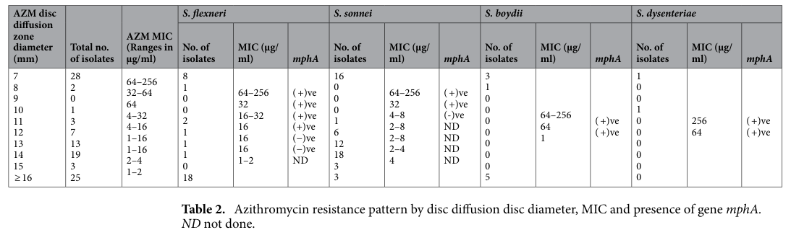

MphA (macrolide 2'-phosphotransferase I, MPH(2')I) is a macrolide kinase that inactivates macrolide antibiotics by transferring the gamma-phosphate of a purine nucleoside triphosphate (GTP, ITP or ATP, with GTP favored) to the 2'-hydroxyl of the desosamine sugar, producing an inactive macrolide 2'-O-phosphate that no longer binds the bacterial ribosome. In contrast to the broad-spectrum MphB (MPH(2')II), MphA is comparatively narrow: it acts efficiently on 14-membered (erythromycin, oleandomycin, clarithromycin, roxithromycin) and 15-membered (azithromycin) macrolides but only very weakly on 16-membered macrolides (spiramycin, josamycin, tylosin). A second distinction is regulation: MphA synthesis is inducible by erythromycin via the upstream TetR-family repressor MphR(A), whereas MphB is constitutive. High-level erythromycin resistance from the original determinant requires mphA together with the adjacent mrx gene (an accessory membrane protein). The enzyme adopts the bi-lobed protein-kinase-like fold of the aminoglycoside phosphotransferase (APH) superfamily (crystal structures solved for MPH(2')-I with a guanine nucleotide and macrolides). MphA is the most clinically prevalent plasmid-borne macrolide-resistance determinant in Enterobacterales and is frequently associated with reduced susceptibility to azithromycin. In contemporary isolates it is typically carried as a mobile IS26/IS6100-bounded composite transposon spanning the mphA-mrx(A)-mphR(A) operon, predominantly on IncF plasmids, which drives its wide horizontal dissemination.
| GO Term | Evidence | Action | Reason |
|---|---|---|---|
|
GO:0050073
macrolide 2'-kinase activity
|
IDA
PMID:2478074 Purification and characterization of macrolide 2'-phosphotra... |
NEW |
Summary: MphA phosphorylates the 2'-OH of macrolides using a purine NTP, producing inactive macrolide 2'-O-phosphate. The purified enzyme is highly active on 14-membered (and 15-membered) macrolides; this matches the GO:0050073 definition (ATP + oleandomycin = ADP + 2 H+ + oleandomycin 2'-O-phosphate).
Reason: The purified enzyme was biochemically characterized as a macrolide 2'-phosphotransferase, and crystal structures of MPH(2')-I confirm the kinase mechanism. No curated GOA annotation exists for this TrEMBL entry, so this specific MF should be added.
Supporting Evidence:
PMID:2478074
MPH(2') is an inducible intracellular enzyme which showed high levels of activity with 14-member-ring macrolides and extremely low levels with 16-member-ring macrolides.
PMID:28416110
We present structures for MPH(2')-I and MPH(2')-II in the apo state, and in complex with GTP analogs and six different macrolides.
|
|
GO:0046677
response to antibiotic
|
IMP
PMID:8619599 Nucleotide sequence and characterization of erythromycin res... |
NEW |
Summary: MphA confers macrolide (notably erythromycin and azithromycin) resistance by enzymatically inactivating the drug; high-level resistance from the native determinant additionally requires mrx. Expression is inducible by erythromycin via the MphR(A) repressor.
Reason: Resistance is the biological process this enzyme participates in. "response to antibiotic" is the standard, well-supported BP for an antibiotic-modifying resistance enzyme (the drug is modified, not degraded, so "antibiotic catabolic process" would be less accurate).
Supporting Evidence:
PMID:8619599
the expression of high-level resistance to erythromycin requires two genes, mphA and mrx, which encode macrolide 2'-phosphotransferase I and an unidentified hydrophobic protein, respectively.
PMID:17302923
The mph(A) gene was unique in conferring resistance to azithromycin.
PMID:38521802
The MIC of azithromycin was ≥ 256 µg/ml for all transconjugants.
|
|
GO:0005737
cytoplasm
|
IDA
PMID:2478074 Purification and characterization of macrolide 2'-phosphotra... |
NEW |
Summary: MphA was characterized as a soluble, intracellular (cytoplasmic) enzyme upon purification from E. coli, consistent with cytoplasmic inactivation of macrolides.
Reason: The purified enzyme was reported as an inducible intracellular enzyme, indicating cytoplasmic localization — the expected compartment for a soluble macrolide-inactivating kinase.
Supporting Evidence:
PMID:2478074
MPH(2') is an inducible intracellular enzyme
|
Q: What is the structural basis for MphA's discrimination against 16-membered macrolides, and could 16-membered macrolides or derivatives evade MphA-mediated resistance clinically?
Experiment: Measure steady-state kinetics (kcat/Km) of purified MphA against 14-, 15- and 16-membered macrolides with GTP vs ATP donors to quantify the substrate and cofactor preferences relative to MphB.
Experiment: Test whether the accessory mrx gene is required for full resistance in a clean E. coli background and determine its molecular role (e.g. membrane association / enzyme stability).
The research report should be a detailed narrative explaining the function, biological processes, and localization of the gene product. Citations should be given for all claims.
You should prioritize authoritative reviews and primary scientific literature when conducting research. You can supplement
this with annotations you find in gene/protein databases, but these can be outdated or inaccurate.
We are specifically interested in the primary function of the gene - for enzymes, what reaction is catalyzed, and what is the substrate specificity? For transporters, what is the substrate? For structural proteins or adapters, what is the broader structural role? For signaling molecules, what is the role in the pathway.
We are interested in where in or outside the cell the gene product carries out its function.
We are also interested in the signaling or biochemical pathways in which the gene functions. We are less interested in broad pleiotropic effects, except where these elucidate the precise role.
Include evidence where possible. We are interested in both experimental evidence as well as inference from structure, evolution, or bioinformatic analysis. Precise studies should be prioritized over high-throughput, where available.
The UniProt target Q47396 corresponds to mphA / mph(A) encoding a macrolide 2′-phosphotransferase (Mph(A); also described as MPH(2′)-I) in Escherichia coli, a kinase-like enzyme related to aminoglycoside phosphotransferases that inactivates macrolide antibiotics by phosphorylation. This matches the core literature describing E. coli mph(A) as macrolide 2′-phosphotransferase I with an inducible mph(A)-mrx-mphR(A) regulatory cluster. (noguchi2000regulationoftranscription pages 1-2, fong2017structuralbasisfor pages 1-3)
Mph(A) is an enzyme-mediated macrolide resistance determinant that functions as a macrolide 2′-phosphotransferase/kinase. In contrast to target-site resistance (e.g., rRNA methylation) or efflux, Mph(A) chemically modifies the drug, rendering it inactive. (golkar2018lookandoutlook pages 6-8, fong2017structuralbasisfor pages 1-3)
Biochemical reaction (conceptual):
- Donor: guanosine triphosphate (GTP) (γ-phosphate donor)
- Acceptor: a hydroxyl group on the macrolide’s amino sugar (classically described as the 2′-OH on desosamine/mycaminose)
- Outcome: phosphorylated macrolide with reduced ribosome-binding activity (functional inactivation). (golkar2018lookandoutlook pages 6-8, fong2017structuralbasisfor pages 1-3)
A key biochemical distinction noted for MPH(2′)-I/Mph(A) is that it is unusual in using GTP exclusively as the phosphate donor. (fong2017structuralbasisfor pages 1-3)
Mph(A) efficiently inactivates 14-membered macrolides such as erythromycin and also the 15-membered macrolide azithromycin. (noguchi2000regulationoftranscription pages 1-2, fong2017structuralbasisfor pages 1-3)
At the broader family level, macrolide phosphotransferases (including mph(A) subtypes) are described as acting most efficiently on 14- and 15-membered lactone macrolides, while other MPH variants can extend activity to additional macrolide scaffolds. (golkar2018lookandoutlook pages 6-8)
In E. coli, mph(A) is commonly found in an inducible, locally regulated cluster:
- mph(A): encodes the macrolide phosphotransferase
- mrx: hydrophobic protein of unclear molecular function but required for high-level resistance phenotype
- mphR(A): a TetR/AcrR-family repressor controlling transcription (negative regulator). (noguchi2000regulationoftranscription pages 1-2, noguchi2000regulationoftranscription pages 5-6)
Mechanistically, MphR(A) binds the mph(A) promoter and represses transcription; exposure to macrolides (notably 14-membered macrolides) reduces MphR(A)-DNA binding, consistent with derepression/induction. (noguchi2000regulationoftranscription pages 5-6)
The retrieved sources establish Mph(A) as a cytosolic enzyme that acts on intracellular antibiotic, but they do not provide a direct experimental localization assay (e.g., fractionation/microscopy) for Mph(A) in E. coli in the excerpts available here. Therefore, localization is best stated conservatively as intracellular enzymatic drug modification consistent with its soluble kinase-like function. (fong2017structuralbasisfor pages 1-3, golkar2018lookandoutlook pages 6-8)
Structural work on MPH(2′) enzymes describes a kinase-like fold related to aminoglycoside phosphotransferases but with a large interdomain linker that expands the antibiotic-binding pocket; the pocket is largely hydrophobic and positions the macrolide’s amino sugar for phosphorylation. (fong2017structuralbasisfor pages 1-3)
Catalysis is consistent with a proximal carboxylate acting as a catalytic base to activate the reactive hydroxyl prior to phosphate transfer, and structural comparisons help explain why different MPH enzymes vary in their activity against different macrolide ring sizes. (fong2017structuralbasisfor pages 8-9)
A 2024 European analysis of WGS data from food-producing animals and meat investigated 1007 E. coli isolates (including 165 azithromycin-resistant isolates, defined as MIC >16 mg/L) and 269 Salmonella isolates. mph(A) is highlighted among the major genetic determinants considered for high-level azithromycin resistance (alongside erm genes), and the study emphasizes that operon structure/architecture can matter for predicting phenotype from WGS data. (ivanova2024azithromycinresistancein pages 1-2)
The same study reported that the presence of known macrolide resistance genes/mutations was associated with the azithromycin-resistant phenotype in 159 (66%) of E. coli and 24 (92%) of Salmonella isolates, illustrating both the utility and current limitations of WGS-only prediction when gene context/expression is not fully resolved. (ivanova2024azithromycinresistancein pages 2-3)
A 2024 genomic characterization of an E. coli ST69 isolate showed mphA embedded in an IS-element-bounded cassette IS26–mphA–mrx(A)–mphR(A)–IS6100, within an ~18.9 kb IS26 composite transposon on an IncF-family hybrid plasmid. This is important for functional annotation because it ties mphA to a mobilizable unit that can disseminate across lineages and species. (wang2024wholegenomesequencingof pages 4-8)
In a comparative analysis cited in that work, among plasmids carrying the 18.9-kb structure, 75/77 (97.4%) were IncF plasmids in E. coli, consistent with IncF plasmids as a dominant vehicle for mphA cassette propagation in E. coli. (wang2024wholegenomesequencingof pages 4-8)
A 2024 study in Shigella (clinically relevant enteric pathogen) provided a clear experimental demonstration of horizontal transfer relevant to E. coli: conjugation transferred a 63 MDa plasmid carrying mphA into E. coli K-12, and all transconjugants displayed azithromycin MIC ≥256 µg/mL, confirming mphA-linked, plasmid-mediated high-level resistance transfer into E. coli. (asad2024multidrugresistantconjugativeplasmid pages 4-5, asad2024multidrugresistantconjugativeplasmid media 75fd2a0d)
The same paper includes tabulated MIC and conjugation results supporting the genotype→phenotype relationship for mphA-positive strains and transconjugants. (asad2024multidrugresistantconjugativeplasmid media a1f352af, asad2024multidrugresistantconjugativeplasmid media 75fd2a0d)
A 2024 Microbiology Spectrum study using multidrug-resistant E. coli reported that colistin combined with azithromycin changed membrane- and resistance-associated gene expression and included downregulation of mph(A) under combination treatment relative to azithromycin alone, consistent with the concept that mph(A)-mediated resistance may be partly mitigated by strategies that alter permeability and/or suppress effective Mph(A) activity in specific contexts. (pawlowski2018theevolutionof pages 6-7)
A 2023 pediatric study of azithromycin-resistant Salmonella enterica isolates found azithromycin MICs ranging from 32 to 256 µg/mL, with mphA present in all resistant isolates, and documented diverse mphA-bearing plasmids with IS-associated core structures, including evidence of cross-Enterobacterales plasmid homology with E. coli plasmids. While not E. coli isolates, these data matter for mphA annotation in E. coli because they show mphA’s plasmid mobility and association with high MICs in closely related Enterobacterales. (wang2023characterizationofresistance pages 7-9, wang2023characterizationofresistance pages 5-7)
The 2024 European surveillance analysis provides an example of real-world implementation where WGS and AMR gene callers (e.g., ResFinder/AMRFinder-style workflows described in the paper’s methods) are used to infer macrolide resistance determinants (including mph(A)) across national surveillance collections, and where interpretation is refined by considering operon structures rather than gene presence alone. (ivanova2024azithromycinresistancein pages 1-2, ivanova2024azithromycinresistancein pages 2-3)
Recent plasmid-focused work demonstrates that mphA often occurs as part of a reusable mobile cassette (e.g., the IS26–mphA–mrx(A)–mphR(A)–IS6100 module), enabling genetic epidemiology approaches that track not only a gene but the translocatable unit across isolates, plasmids, and even chromosomal integrations in Enterobacterales. This is directly applicable to infection control, source attribution, and One Health tracking of resistance mobilomes. (wang2024wholegenomesequencingof pages 4-8)
The 2024 conjugation results provide a practical model used in microbiology labs to validate the transferability and phenotypic effect of mphA-bearing plasmids into E. coli recipients, bridging genomic findings and functional risk assessment. (asad2024multidrugresistantconjugativeplasmid pages 4-5, asad2024multidrugresistantconjugativeplasmid media 75fd2a0d)
A detailed review of enzyme-mediated macrolide resistance emphasizes that macrolide phosphotransferases are increasingly important because they provide direct drug detoxification, and mph(A)-type genes are frequently associated with mobile genetic elements enabling dissemination among pathogens (including Enterobacterales). This supports mphA annotation as a high-impact, horizontally transferable resistance factor rather than a strain-restricted trait. (golkar2018lookandoutlook pages 6-8)
Primary regulatory work shows that mphA can be inducible via MphR(A)-mediated repression and macrolide-triggered derepression, and that high-level resistance may require co-occurrence of mrx with mph(A). This helps explain why WGS-based prediction can be imperfect when it ignores gene context, operon integrity, and regulatory function. (noguchi2000regulationoftranscription pages 1-2, noguchi2000regulationoftranscription pages 5-6, ivanova2024azithromycinresistancein pages 2-3)
Structural insights identifying the expanded macrolide-binding pocket and GTP specificity (in MPH(2′)-I/Mph(A)) provide a rational basis for exploring inhibitors that target the nucleotide-binding pocket or macrolide-binding cleft, or for designing macrolide analogs less susceptible to Mph(A)-mediated phosphorylation. (fong2017structuralbasisfor pages 1-3, fong2017structuralbasisfor pages 8-9)
The following table consolidates the most directly supported claims (mechanism, regulation, dissemination, and quantitative evidence).
| Topic | Key finding | Study/system | Quantitative data | Publication (year, journal) and URL | Citation ID |
|---|---|---|---|---|---|
| Reaction/substrate | E. coli Mph(A) is a macrolide 2'-phosphotransferase/kinase that phosphorylates the amino sugar of macrolides and efficiently inactivates 14-membered macrolides such as erythromycin and the 15-membered macrolide azithromycin; Mph(A) uses GTP exclusively as phosphate donor. | Structural/biochemical characterization of MPH(2')-I from E. coli and Mph family enzymes | Qualitative substrate scope: 14- and 15-membered macrolides; exclusive GTP use | Fong et al., 2017, Structure; https://doi.org/10.1016/j.str.2017.03.007 | (fong2017structuralbasisfor pages 1-3) |
| Reaction/substrate | Mph-family enzymes catalyze transfer of the γ-phosphate from GTP to the 2'-OH of macrolides; Mph(A) belongs to the clinically important mobile mph(A)-mph(O) family and is associated mainly with resistance to 14- and 15-membered macrolides. | Review of enzyme-mediated macrolide resistance | Qualitative family-level mechanistic summary | Golkar et al., 2018, Frontiers in Microbiology; https://doi.org/10.3389/fmicb.2018.01942 | (golkar2018lookandoutlook pages 6-8) |
| Regulation | The E. coli mph(A)-mrx-mphR(A) cluster is inducible by erythromycin; MphR(A) is a TetR/AcrR-like repressor that binds the mph(A) promoter and is released by macrolides, causing derepression. | E. coli mph(A) regulatory locus | 2.9-kb inducible transcript detected; 14-membered macrolides inhibited MphR(A)-DNA binding at ~100-fold lower concentrations than representative 16-membered macrolides | Noguchi et al., 2000, Journal of Bacteriology; https://doi.org/10.1128/jb.182.18.5052-5058.2000 | (noguchi2000regulationoftranscription pages 1-2, noguchi2000regulationoftranscription pages 5-6, noguchi2000regulationoftranscription pages 2-4) |
| Regulation/phenotype | mph(A) alone confers low-level erythromycin resistance, while co-carriage with mrx yields high-level resistance; mrx is hydrophobic and required for full Mph(A) expression/resistance phenotype. | E. coli plasmid constructs carrying mph(A) with/without mrx | Qualitative comparison: low-level vs high-level EM resistance depending on mrx presence | Noguchi et al., 2000, Journal of Bacteriology; https://doi.org/10.1128/jb.182.18.5052-5058.2000 | (noguchi2000regulationoftranscription pages 1-2) |
| Genetic context | In a clinical E. coli ST69 isolate, mphA occurred in an IS26-composite transposon as the module IS26-mphA-mrx(A)-mphR(A)-IS6100 on a hybrid IncF plasmid carrying multiple resistance genes. | E. coli EC6868 (ST69), hospital isolate | ~18.9-kb IS26 composite transposon; isolate year 2017 | Wang et al., 2024, Infection and Drug Resistance; https://doi.org/10.2147/idr.s427571 | (wang2024wholegenomesequencingof pages 4-8) |
| Genetic context | The same 18.9-kb mphA module is widely disseminated across Enterobacterales plasmids/chromosomes, especially IncF plasmids in E. coli, indicating strong mobility of the mphA-mrx(A)-mphR(A) cassette. | Comparative plasmid/genome analysis across Enterobacterales | 75/77 plasmids harboring the 18.9-kb structure were IncF (97.4%); 81 plasmids analyzed overall | Wang et al., 2024, Infection and Drug Resistance; https://doi.org/10.2147/idr.s427571 | (wang2024wholegenomesequencingof pages 4-8) |
| Surveillance/prevalence | Large-scale European surveillance found mph(A) among the principal azithromycin-resistance determinants in E. coli and Salmonella and showed that different mph(A) operon structures were associated with susceptible versus resistant isolates. | EU harmonized AMR surveillance plus Danish surveillance | 1,007 E. coli analyzed, including 165 azithromycin-resistant isolates (MIC >16 mg/L); 269 Salmonella, including 29 resistant isolates; overall genotype-phenotype concordance 69% in E. coli and 92% in Salmonella | Ivanova et al., 2024, Journal of Antimicrobial Chemotherapy; https://doi.org/10.1093/jac/dkae161 | (ivanova2024azithromycinresistancein pages 1-2, ivanova2024azithromycinresistancein pages 2-3) |
| MIC/phenotype | In pediatric azithromycin-resistant Salmonella, all resistant isolates carried mphA and showed high AZM MICs, supporting mphA as a major high-level azithromycin resistance determinant in Enterobacterales. | 15 azithromycin-resistant Salmonella enterica isolates from children, Shenzhen | Resistance rate 3.08% (15/487); MIC distribution: 53.33% at 32 µg/mL, 20.0% at 64 µg/mL, 26.67% at 256 µg/mL; all 15/15 carried mphA | Wang et al., 2023, Frontiers in Cellular and Infection Microbiology; https://doi.org/10.3389/fcimb.2023.1116172 | (wang2023characterizationofresistance pages 3-5, wang2023characterizationofresistance pages 7-9) |
| Genetic context | mphA-bearing plasmids in Salmonella showed a conserved mobile backbone centered on an IS-mphA-tap structure and occurred on multiple plasmid types, with evidence for cross-species exchange with E. coli plasmids. | Shenzhen Salmonella plasmid analysis | All 15 mphA-positive contigs shared a core IS-mphA-tap structure; 8 distinct plasmids among 15 isolates; some homologous to E. coli plasmids at >99.9% identity | Wang et al., 2023, Frontiers in Cellular and Infection Microbiology; https://doi.org/10.3389/fcimb.2023.1116172 | (wang2023characterizationofresistance pages 5-7) |
| MIC/phenotype | In Bangladesh Shigella, plasmid-borne mphA was associated with very high azithromycin resistance and was experimentally transferable into E. coli, confirming phenotype transfer by horizontal gene transfer. | Shigella donors and E. coli K-12 transconjugants | 42/59 isolates were AZM-resistant; MRP plasmid more frequent in resistant vs susceptible strains (60%, 25/42 vs 24%, 4/17; p<0.0001); transferred plasmid size 63 MDa; all transconjugants had AZM MIC ≥256 µg/mL | Asad et al., 2024, Scientific Reports; https://doi.org/10.1038/s41598-024-57423-1 | (asad2024multidrugresistantconjugativeplasmid pages 4-5, asad2024multidrugresistantconjugativeplasmid media a1f352af, asad2024multidrugresistantconjugativeplasmid media 75fd2a0d) |
| Interventions | Combination treatment that increased outer-membrane permeability (colistin plus azithromycin) reduced mph(A) expression/activity and restored azithromycin susceptibility in multidrug-resistant E. coli, suggesting Mph(A)-linked resistance can be partly overcome pharmacologically. | Multidrug-resistant E. coli T28R | 48 differentially expressed genes under combination treatment; mph(A) downregulated relative to azithromycin alone | Luo et al., 2024, Microbiology Spectrum; https://doi.org/10.1128/spectrum.03918-23 | (pawlowski2018theevolutionof pages 6-7) |
Table: This table compiles mechanistic, regulatory, epidemiologic, and phenotypic evidence for the Enterobacterales macrolide resistance gene mphA/Mph(A), emphasizing E. coli where possible. It is useful as a concise evidence map linking biochemical function to mobile genetic context and recent surveillance findings.
Recommended functional name: macrolide 2′-phosphotransferase (Mph(A); MPH(2′)-I). (fong2017structuralbasisfor pages 1-3)
Molecular function: GTP-dependent macrolide kinase/phosphotransferase that phosphorylates a hydroxyl on the macrolide amino sugar (commonly described as the 2′-OH), inactivating macrolides. (golkar2018lookandoutlook pages 6-8, fong2017structuralbasisfor pages 1-3)
Primary substrates (supported here): erythromycin (14-membered) and azithromycin (15-membered). (noguchi2000regulationoftranscription pages 1-2, fong2017structuralbasisfor pages 1-3)
Biological process: antibiotic resistance via drug inactivation (macrolide detoxification). (golkar2018lookandoutlook pages 6-8)
Regulatory context: often part of inducible operon mph(A)-mrx-mphR(A); MphR(A) is a repressor released by macrolides; mrx required for high-level resistance. (noguchi2000regulationoftranscription pages 1-2, noguchi2000regulationoftranscription pages 5-6)
Typical genetic context in contemporary isolates: mobilizable IS-element-bounded modules such as IS26–mphA–mrx(A)–mphR(A)–IS6100 on IncF plasmids (and also found across Enterobacterales). (wang2024wholegenomesequencingof pages 4-8)
References
(noguchi2000regulationoftranscription pages 1-2): Norihisa Noguchi, Katsutoshi Takada, Jin Katayama, Ayako Emura, and Masanori Sasatsu. Regulation of transcription of themph(a) gene for macrolide 2′-phosphotransferase i inescherichia coli: characterization of the regulatory gene mphr(a). Journal of Bacteriology, 182:5052-5058, Sep 2000. URL: https://doi.org/10.1128/jb.182.18.5052-5058.2000, doi:10.1128/jb.182.18.5052-5058.2000. This article has 113 citations and is from a peer-reviewed journal.
(fong2017structuralbasisfor pages 1-3): Desiree H. Fong, David L. Burk, Jonathan Blanchet, Amy Y. Yan, and Albert M. Berghuis. Structural basis for kinase-mediated macrolide antibiotic resistance. Structure, 25 5:750-761.e5, May 2017. URL: https://doi.org/10.1016/j.str.2017.03.007, doi:10.1016/j.str.2017.03.007. This article has 40 citations and is from a domain leading peer-reviewed journal.
(golkar2018lookandoutlook pages 6-8): Tolou Golkar, Michał Zieliński, and Albert M. Berghuis. Look and outlook on enzyme-mediated macrolide resistance. Frontiers in Microbiology, Aug 2018. URL: https://doi.org/10.3389/fmicb.2018.01942, doi:10.3389/fmicb.2018.01942. This article has 172 citations and is from a peer-reviewed journal.
(noguchi2000regulationoftranscription pages 5-6): Norihisa Noguchi, Katsutoshi Takada, Jin Katayama, Ayako Emura, and Masanori Sasatsu. Regulation of transcription of themph(a) gene for macrolide 2′-phosphotransferase i inescherichia coli: characterization of the regulatory gene mphr(a). Journal of Bacteriology, 182:5052-5058, Sep 2000. URL: https://doi.org/10.1128/jb.182.18.5052-5058.2000, doi:10.1128/jb.182.18.5052-5058.2000. This article has 113 citations and is from a peer-reviewed journal.
(fong2017structuralbasisfor pages 8-9): Desiree H. Fong, David L. Burk, Jonathan Blanchet, Amy Y. Yan, and Albert M. Berghuis. Structural basis for kinase-mediated macrolide antibiotic resistance. Structure, 25 5:750-761.e5, May 2017. URL: https://doi.org/10.1016/j.str.2017.03.007, doi:10.1016/j.str.2017.03.007. This article has 40 citations and is from a domain leading peer-reviewed journal.
(ivanova2024azithromycinresistancein pages 1-2): Mirena Ivanova, A. Ovsepian, P. Leekitcharoenphon, A. Seyfarth, H. Mordhorst, Saria Otani, Sandra Koeberl-Jelovcan, M. Milanov, G. Kompes, Maria Liapi, Tomás Cerný, Camilla Thougaard Vester, A. Perrin-Guyomard, J. Hammerl, Mirjam Grobbel, Eleni Valkanou, Szilárd Jánosi, Rosemarie Slowey, Patricia Alba, Virginia Carfora, J. Avsejenko, A. Pereckienė, D. Claude, Renato Zerafa, K. Veldman, Cécile Boland, C. Garcı́a-Graells, P. Wattiau, Patrick Butaye, M. Zając, A. Amaro, L. Clemente, Angela M Vaduva, L. Romaşcu, N. Miliţă, Andrea Mojžišová, Irena Zdovc, Maria Jesús Zamora Escribano, Cristina De Frutos Escobar, G. Overesch, Christopher Teale, Guy H Loneragan, Beatriz Guerra, P. Beloeil, Amanda M. V. Brown, R. Hendriksen, Valeria Bortolaia, and J. Kjeldgaard. Azithromycin resistance in escherichia coli and salmonella from food-producing animals and meat in europe. Journal of Antimicrobial Chemotherapy, 79:1657-1667, May 2024. URL: https://doi.org/10.1093/jac/dkae161, doi:10.1093/jac/dkae161. This article has 28 citations and is from a domain leading peer-reviewed journal.
(ivanova2024azithromycinresistancein pages 2-3): Mirena Ivanova, A. Ovsepian, P. Leekitcharoenphon, A. Seyfarth, H. Mordhorst, Saria Otani, Sandra Koeberl-Jelovcan, M. Milanov, G. Kompes, Maria Liapi, Tomás Cerný, Camilla Thougaard Vester, A. Perrin-Guyomard, J. Hammerl, Mirjam Grobbel, Eleni Valkanou, Szilárd Jánosi, Rosemarie Slowey, Patricia Alba, Virginia Carfora, J. Avsejenko, A. Pereckienė, D. Claude, Renato Zerafa, K. Veldman, Cécile Boland, C. Garcı́a-Graells, P. Wattiau, Patrick Butaye, M. Zając, A. Amaro, L. Clemente, Angela M Vaduva, L. Romaşcu, N. Miliţă, Andrea Mojžišová, Irena Zdovc, Maria Jesús Zamora Escribano, Cristina De Frutos Escobar, G. Overesch, Christopher Teale, Guy H Loneragan, Beatriz Guerra, P. Beloeil, Amanda M. V. Brown, R. Hendriksen, Valeria Bortolaia, and J. Kjeldgaard. Azithromycin resistance in escherichia coli and salmonella from food-producing animals and meat in europe. Journal of Antimicrobial Chemotherapy, 79:1657-1667, May 2024. URL: https://doi.org/10.1093/jac/dkae161, doi:10.1093/jac/dkae161. This article has 28 citations and is from a domain leading peer-reviewed journal.
(wang2024wholegenomesequencingof pages 4-8): Ling Wang, Yuee Guan, Xu Lin, Jie Wei, Qinghuan Zhang, Limei Zhang, Jing Tan, Jie Jiang, Caiqin Ling, Lei Cai, Xiaobin Li, Xiong Liang, Wei Wei, and Rui-Man Li. Whole-genome sequencing of an escherichia coli st69 strain harboring blactx-m-27 on a hybrid plasmid. Infection and Drug Resistance, 17:365-375, Feb 2024. URL: https://doi.org/10.2147/idr.s427571, doi:10.2147/idr.s427571. This article has 7 citations and is from a peer-reviewed journal.
(asad2024multidrugresistantconjugativeplasmid pages 4-5): Asaduzzaman Asad, Israt Jahan, Moriam Akter Munni, Ruma Begum, Morium Akter Mukta, Kazi Saif, Shah Nayeem Faruque, Shoma Hayat, and Zhahirul Islam. Multidrug-resistant conjugative plasmid carrying mpha confers increased antimicrobial resistance in shigella. Scientific Reports, Mar 2024. URL: https://doi.org/10.1038/s41598-024-57423-1, doi:10.1038/s41598-024-57423-1. This article has 26 citations and is from a peer-reviewed journal.
(asad2024multidrugresistantconjugativeplasmid media 75fd2a0d): Asaduzzaman Asad, Israt Jahan, Moriam Akter Munni, Ruma Begum, Morium Akter Mukta, Kazi Saif, Shah Nayeem Faruque, Shoma Hayat, and Zhahirul Islam. Multidrug-resistant conjugative plasmid carrying mpha confers increased antimicrobial resistance in shigella. Scientific Reports, Mar 2024. URL: https://doi.org/10.1038/s41598-024-57423-1, doi:10.1038/s41598-024-57423-1. This article has 26 citations and is from a peer-reviewed journal.
(asad2024multidrugresistantconjugativeplasmid media a1f352af): Asaduzzaman Asad, Israt Jahan, Moriam Akter Munni, Ruma Begum, Morium Akter Mukta, Kazi Saif, Shah Nayeem Faruque, Shoma Hayat, and Zhahirul Islam. Multidrug-resistant conjugative plasmid carrying mpha confers increased antimicrobial resistance in shigella. Scientific Reports, Mar 2024. URL: https://doi.org/10.1038/s41598-024-57423-1, doi:10.1038/s41598-024-57423-1. This article has 26 citations and is from a peer-reviewed journal.
(pawlowski2018theevolutionof pages 6-7): Andrew C. Pawlowski, Peter J. Stogios, Kalinka Koteva, Tatiana Skarina, Elena Evdokimova, Alexei Savchenko, and Gerard D. Wright. The evolution of substrate discrimination in macrolide antibiotic resistance enzymes. Nature Communications, Jan 2018. URL: https://doi.org/10.1038/s41467-017-02680-0, doi:10.1038/s41467-017-02680-0. This article has 102 citations and is from a highest quality peer-reviewed journal.
(wang2023characterizationofresistance pages 7-9): Hongmei Wang, Hang Cheng, Baoxing Huang, Xiumei Hu, Yunsheng Chen, Lei Zheng, Liang Yang, Jikui Deng, and Qian Wang. Characterization of resistance genes and plasmids from sick children caused by salmonella enterica resistance to azithromycin in shenzhen, china. Frontiers in Cellular and Infection Microbiology, Mar 2023. URL: https://doi.org/10.3389/fcimb.2023.1116172, doi:10.3389/fcimb.2023.1116172. This article has 26 citations.
(wang2023characterizationofresistance pages 5-7): Hongmei Wang, Hang Cheng, Baoxing Huang, Xiumei Hu, Yunsheng Chen, Lei Zheng, Liang Yang, Jikui Deng, and Qian Wang. Characterization of resistance genes and plasmids from sick children caused by salmonella enterica resistance to azithromycin in shenzhen, china. Frontiers in Cellular and Infection Microbiology, Mar 2023. URL: https://doi.org/10.3389/fcimb.2023.1116172, doi:10.3389/fcimb.2023.1116172. This article has 26 citations.
(noguchi2000regulationoftranscription pages 2-4): Norihisa Noguchi, Katsutoshi Takada, Jin Katayama, Ayako Emura, and Masanori Sasatsu. Regulation of transcription of themph(a) gene for macrolide 2′-phosphotransferase i inescherichia coli: characterization of the regulatory gene mphr(a). Journal of Bacteriology, 182:5052-5058, Sep 2000. URL: https://doi.org/10.1128/jb.182.18.5052-5058.2000, doi:10.1128/jb.182.18.5052-5058.2000. This article has 113 citations and is from a peer-reviewed journal.
(wang2023characterizationofresistance pages 3-5): Hongmei Wang, Hang Cheng, Baoxing Huang, Xiumei Hu, Yunsheng Chen, Lei Zheng, Liang Yang, Jikui Deng, and Qian Wang. Characterization of resistance genes and plasmids from sick children caused by salmonella enterica resistance to azithromycin in shenzhen, china. Frontiers in Cellular and Infection Microbiology, Mar 2023. URL: https://doi.org/10.3389/fcimb.2023.1116172, doi:10.3389/fcimb.2023.1116172. This article has 26 citations.

Curated alongside MphB (A0A0H3EUF3_ECO8N) to capture the MphA vs MphB substrate-specificity contrast.
Initial curation used primary literature directly; falcon deep research was subsequently run (see Update
below). just not installed in container — used uv run ai-gene-review ... directly.
Falcon deep research completed (Q47396_ECOLX-deep-research-falcon.md). New verifiable findings added:
Other deep-research points (clinical/epidemiology, not added as GO-supporting): mphA is the major azithromycin
resistance determinant in Enterobacterales with high MICs (≥256 µg/mL); MphR(A) derepressed ~100× more
effectively by 14-membered than 16-membered macrolides; mphA alone = low-level, mphA+mrx = high-level
resistance (Noguchi 2000). The Golkar quote was also added to the MphB review to reinforce the I-vs-II contrast.
The "GTP exclusively" claim (deep research, attributed to Fong 2017 full text) was NOT asserted in the review —
cached Fong is abstract-only and O'Hara 1989 shows GTP/ITP/ATP all function (GTP listed first), so the review
states "GTP favored" rather than "exclusive" (verify-don't-trust).
id: Q47396
gene_symbol: mphA
aliases:
- MphA
- mph(A)
- macrolide 2'-phosphotransferase I
- MPH(2')I
product_type: PROTEIN
status: DRAFT
taxon:
id: NCBITaxon:562
label: Escherichia coli
description: >-
MphA (macrolide 2'-phosphotransferase I, MPH(2')I) is a macrolide kinase that inactivates
macrolide antibiotics by transferring the gamma-phosphate of a purine nucleoside triphosphate
(GTP, ITP or ATP, with GTP favored) to the 2'-hydroxyl of the desosamine sugar, producing an
inactive macrolide 2'-O-phosphate that no longer binds the bacterial ribosome. In contrast to the
broad-spectrum MphB (MPH(2')II), MphA is comparatively narrow: it acts efficiently on 14-membered
(erythromycin, oleandomycin, clarithromycin, roxithromycin) and 15-membered (azithromycin)
macrolides but only very weakly on 16-membered macrolides (spiramycin, josamycin, tylosin). A
second distinction is regulation: MphA synthesis is inducible by erythromycin via the upstream
TetR-family repressor MphR(A), whereas MphB is constitutive. High-level erythromycin resistance
from the original determinant requires mphA together with the adjacent mrx gene (an accessory
membrane protein). The enzyme adopts the bi-lobed protein-kinase-like fold of the aminoglycoside
phosphotransferase (APH) superfamily (crystal structures solved for MPH(2')-I with a guanine
nucleotide and macrolides). MphA is the most clinically prevalent plasmid-borne macrolide-resistance
determinant in Enterobacterales and is frequently associated with reduced susceptibility to
azithromycin. In contemporary isolates it is typically carried as a mobile IS26/IS6100-bounded
composite transposon spanning the mphA-mrx(A)-mphR(A) operon, predominantly on IncF plasmids,
which drives its wide horizontal dissemination.
references:
- id: PMID:2478074
title: "Purification and characterization of macrolide 2'-phosphotransferase from a strain of Escherichia coli that is highly resistant to erythromycin"
findings:
- statement: >-
MPH(2')I is an inducible intracellular enzyme that is highly active on 14-membered macrolides but
shows extremely low activity on 16-membered macrolides — the defining narrow specificity vs MphB.
supporting_text: "MPH(2') is an inducible intracellular enzyme which showed high levels of activity with 14-member-ring macrolides and extremely low levels with 16-member-ring macrolides."
- statement: >-
Purine nucleotides GTP, ITP and ATP serve as phosphate donors.
supporting_text: "Purine nucleotides, such as GTP, ITP, and ATP, were effective as cofactors in the inactivation of macrolides."
reference_review:
relevance: HIGH
correctness: VERIFIED
review_notes: >-
PubMed-verified (O'Hara et al., Antimicrob Agents Chemother 1989). Original purification and
characterization of MPH(2')I; the primary source for MphA's 14-membered (not 16-membered) substrate
specificity, inducibility, and purine-NTP donor usage — the direct contrast to MphB (PMID:1330822).
- id: PMID:8619599
title: "Nucleotide sequence and characterization of erythromycin resistance determinant that encodes macrolide 2'-phosphotransferase I in Escherichia coli"
findings:
- statement: >-
High-level erythromycin resistance from this determinant requires two genes, mphA (encoding MPH(2')I)
and mrx (an accessory hydrophobic protein).
supporting_text: "the expression of high-level resistance to erythromycin requires two genes, mphA and mrx, which encode macrolide 2'-phosphotransferase I and an unidentified hydrophobic protein, respectively."
reference_review:
relevance: HIGH
correctness: VERIFIED
review_notes: >-
PubMed-verified (Noguchi et al., Antimicrob Agents Chemother 1995). Cloning/sequencing of the mphA
determinant; establishes mphA identity and the mphA+mrx requirement for high-level resistance.
- id: PMID:10960087
title: "Regulation of transcription of the mph(A) gene for macrolide 2'-phosphotransferase I in Escherichia coli: characterization of the regulatory gene mphR(A)"
findings:
- statement: >-
MphA synthesis is inducible by erythromycin and is controlled by the regulatory gene mphR(A) — unlike
the constitutive MphB.
supporting_text: "The synthesis of macrolide 2'-phosphotransferase I [Mph(A)], which inactivates erythromycin, is inducible by erythromycin."
reference_review:
relevance: HIGH
correctness: VERIFIED
review_notes: >-
PubMed-verified (Noguchi et al., J Bacteriol 2000). Characterizes the mphR(A) repressor controlling
inducible mphA expression; supports the regulatory distinction from constitutive mphB.
- id: PMID:17302923
title: "Resistance phenotypes conferred by macrolide phosphotransferases"
findings:
- statement: >-
Among the mph genes compared in an efflux-deficient host, mph(A) was uniquely able to confer
resistance to azithromycin (a 15-membered macrolide).
supporting_text: "The mph(A) gene was unique in conferring resistance to azithromycin."
reference_review:
relevance: HIGH
correctness: VERIFIED
review_notes: >-
PubMed-verified (Chesneau et al., FEMS Microbiol Lett 2007). Comparative phenotyping of mph genes;
documents mph(A)'s azithromycin activity, consistent with its 14-/15-membered specificity.
- id: PMID:28416110
title: "Structural Basis for Kinase-Mediated Macrolide Antibiotic Resistance"
findings:
- statement: >-
Crystal structures of MPH(2')-I (MphA) were determined apo and in complex with GTP analogs and
macrolides, revealing the kinase-like fold.
supporting_text: "We present structures for MPH(2')-I and MPH(2')-II in the apo state, and in complex with GTP analogs and six different macrolides."
reference_review:
relevance: HIGH
correctness: VERIFIED
review_notes: >-
PubMed-verified (Fong et al., Structure 2017). Provides the MphA (MPH(2')-I) crystal structures
(PDB 5IGH/5IGI), confirming the APH/protein-kinase-like fold and GTP-analog/macrolide binding.
- id: PMID:29317655
title: "The evolution of substrate discrimination in macrolide antibiotic resistance enzymes"
findings:
- statement: >-
MphA is one of the mobilized Mph homologs that are widespread in Gram-negative bacteria.
supporting_text: "MphA, MphB, and MphE are widespread in Gram-negative bacteria"
reference_review:
relevance: MEDIUM
correctness: VERIFIED
review_notes: >-
PubMed-verified (Pawlowski et al., Nat Commun 2018). Phylogenetic/functional survey of Mph enzymes
placing MphA among the clinically mobilized, widespread Gram-negative resistance kinases.
- id: PMID:30177927
title: "Look and Outlook on Enzyme-Mediated Macrolide Resistance"
findings:
- statement: >-
MPH(2')-I (MphA) efficiently inactivates only 14- and 15-membered macrolides, whereas MPH(2')-II (MphB)
additionally inactivates 16-membered macrolides and telithromycin — the explicit MphA/MphB contrast.
supporting_text: "MPH(2′)-I can only efficiently inactivate 14- and 15-membered lactone macrolides, whereas MPH(2′)-II can additionally inactivate 16-membered lactone macrolides and the ketolide, telithromycin"
- statement: >-
Mph enzymes transfer the gamma-phosphate of GTP onto macrolide substrates; mph(A), (B) and (C) are
mobile-element-encoded and found in clinical E. coli.
supporting_text: "These MPHs all mediate the transfer of the γ-phosphate group from GTP onto the macrolide substrates...mph(A), (B), and (C), which are encoded on mobile genetic elements, are found in clinical isolates of E."
reference_review:
relevance: HIGH
correctness: VERIFIED
review_notes: >-
PubMed-verified (Golkar et al., Front Microbiol 2018). Authoritative review of enzyme-mediated macrolide
resistance; provides a clean secondary-source statement of the MPH(2')-I vs -II substrate-specificity
distinction and the GTP phosphate-donor mechanism.
- id: PMID:38318209
title: "Whole-Genome Sequencing of an Escherichia coli ST69 Strain Harboring bla(CTX-M-27) on a Hybrid Plasmid"
findings:
- statement: >-
In a clinical E. coli isolate, the mphA-mrx(A)-mphR(A) operon is carried within an IS26/IS6100-bounded
composite transposon, the mobile unit that disseminates mphA on IncF plasmids.
supporting_text: "the mphA-mrx(A)-mphR(A) operon conferring macrolide resistance was flanked by IS26 and IS6100, forming the IS26-mphA-mrx(A)-mphR(A)-IS6100 transposable structure"
reference_review:
relevance: MEDIUM
correctness: VERIFIED
review_notes: >-
PubMed-verified (Wang et al., Infect Drug Resist 2024). Documents the contemporary mobile genetic
context of mphA (IS26 composite transposon, IncF plasmids), supporting its horizontal dissemination.
- id: PMID:38521802
title: "Multidrug-resistant conjugative plasmid carrying mphA confers increased antimicrobial resistance in Shigella"
findings:
- statement: >-
A conjugative plasmid carrying mphA transferred high-level azithromycin resistance; all transconjugants
reached azithromycin MIC >=256 ug/ml, demonstrating mphA-mediated, plasmid-borne resistance.
supporting_text: "The MIC of azithromycin was ≥ 256 µg/ml for all transconjugants."
- statement: >-
Plasmid-borne mphA inactivates macrolides by modifying the drug's molecular structure.
supporting_text: "Several reports suggested that plasmid-mediated macrolide 2'-phosphotransferase (mphA) mostly and esterase (ermB) for some instances inactivate macrolide through modifying its molecular structure"
reference_review:
relevance: MEDIUM
correctness: VERIFIED
review_notes: >-
PubMed-verified (Asad et al., Sci Rep 2024). Experimental conjugation/MIC evidence that plasmid-borne
mphA confers high-level azithromycin resistance transferable into recipient Enterobacterales.
existing_annotations:
# NOTE: The QuickGO GOA export for this TrEMBL accession is empty (no curated annotations).
# The only electronic GO term on the UniProt record is the over-general GO:0016740 "transferase
# activity" (IEA from the UniProtKB Transferase keyword), which is not in GOA. The annotations
# below (action: NEW) capture the specific, experimentally established function of MphA.
- term:
id: GO:0050073
label: macrolide 2'-kinase activity
evidence_type: IDA
original_reference_id: PMID:2478074
review:
summary: >-
MphA phosphorylates the 2'-OH of macrolides using a purine NTP, producing inactive macrolide
2'-O-phosphate. The purified enzyme is highly active on 14-membered (and 15-membered) macrolides; this
matches the GO:0050073 definition (ATP + oleandomycin = ADP + 2 H+ + oleandomycin 2'-O-phosphate).
action: NEW
reason: >-
The purified enzyme was biochemically characterized as a macrolide 2'-phosphotransferase, and crystal
structures of MPH(2')-I confirm the kinase mechanism. No curated GOA annotation exists for this TrEMBL
entry, so this specific MF should be added.
additional_reference_ids:
- PMID:8619599
- PMID:28416110
supported_by:
- reference_id: PMID:2478074
supporting_text: "MPH(2') is an inducible intracellular enzyme which showed high levels of activity with 14-member-ring macrolides and extremely low levels with 16-member-ring macrolides."
- reference_id: PMID:28416110
supporting_text: "We present structures for MPH(2')-I and MPH(2')-II in the apo state, and in complex with GTP analogs and six different macrolides."
- term:
id: GO:0046677
label: response to antibiotic
evidence_type: IMP
original_reference_id: PMID:8619599
review:
summary: >-
MphA confers macrolide (notably erythromycin and azithromycin) resistance by enzymatically
inactivating the drug; high-level resistance from the native determinant additionally requires mrx.
Expression is inducible by erythromycin via the MphR(A) repressor.
action: NEW
reason: >-
Resistance is the biological process this enzyme participates in. "response to antibiotic" is the
standard, well-supported BP for an antibiotic-modifying resistance enzyme (the drug is modified, not
degraded, so "antibiotic catabolic process" would be less accurate).
additional_reference_ids:
- PMID:10960087
- PMID:17302923
- PMID:38521802
supported_by:
- reference_id: PMID:8619599
supporting_text: "the expression of high-level resistance to erythromycin requires two genes, mphA and mrx, which encode macrolide 2'-phosphotransferase I and an unidentified hydrophobic protein, respectively."
- reference_id: PMID:17302923
supporting_text: "The mph(A) gene was unique in conferring resistance to azithromycin."
- reference_id: PMID:38521802
supporting_text: "The MIC of azithromycin was ≥ 256 µg/ml for all transconjugants."
- term:
id: GO:0005737
label: cytoplasm
evidence_type: IDA
original_reference_id: PMID:2478074
review:
summary: >-
MphA was characterized as a soluble, intracellular (cytoplasmic) enzyme upon purification from E. coli,
consistent with cytoplasmic inactivation of macrolides.
action: NEW
reason: >-
The purified enzyme was reported as an inducible intracellular enzyme, indicating cytoplasmic
localization — the expected compartment for a soluble macrolide-inactivating kinase.
supported_by:
- reference_id: PMID:2478074
supporting_text: "MPH(2') is an inducible intracellular enzyme"
core_functions:
- description: >-
MphA is a macrolide 2'-phosphotransferase (macrolide kinase): it transfers the gamma-phosphate of a
purine nucleoside triphosphate (GTP/ITP/ATP) to the 2'-hydroxyl of the desosamine sugar of macrolide
antibiotics, producing an inactive macrolide 2'-O-phosphate. This detoxifies the drug and is the basis
of the macrolide resistance it confers. Its substrate range is narrower than MphB: it is highly active
on 14- and 15-membered macrolides but only weakly on 16-membered macrolides. Expression is inducible by
erythromycin (via MphR(A)). The enzyme uses the conserved active-site residues of the protein-kinase-like/
APH fold for metal-dependent phosphoryl transfer.
molecular_function:
id: GO:0050073
label: macrolide 2'-kinase activity
directly_involved_in:
- id: GO:0046677
label: response to antibiotic
locations:
- id: GO:0005737
label: cytoplasm
# Substrate specificity recorded at finer granularity than the GO MF term: MphA acts on 14- and
# 15-membered macrolides but is essentially inactive on 16-membered macrolides (the discriminator
# from MphB, which additionally modifies josamycin/tylosin/spiramycin).
substrates:
- id: CHEBI:48923 # 14-membered
label: erythromycin
- id: CHEBI:16869 # 14-membered (classic in vitro assay substrate)
label: oleandomycin
- id: CHEBI:3732 # 14-membered
label: clarithromycin
- id: CHEBI:48844 # 14-membered
label: roxithromycin
- id: CHEBI:2955 # 15-membered
label: azithromycin
supported_by:
- reference_id: PMID:2478074
supporting_text: "MPH(2') is an inducible intracellular enzyme which showed high levels of activity with 14-member-ring macrolides and extremely low levels with 16-member-ring macrolides."
- reference_id: PMID:17302923
supporting_text: "The mph(A) gene was unique in conferring resistance to azithromycin."
- reference_id: PMID:30177927
supporting_text: "MPH(2′)-I can only efficiently inactivate 14- and 15-membered lactone macrolides, whereas MPH(2′)-II can additionally inactivate 16-membered lactone macrolides and the ketolide, telithromycin"
suggested_questions:
- question: >-
What is the structural basis for MphA's discrimination against 16-membered macrolides, and could
16-membered macrolides or derivatives evade MphA-mediated resistance clinically?
suggested_experiments:
- description: >-
Measure steady-state kinetics (kcat/Km) of purified MphA against 14-, 15- and 16-membered macrolides
with GTP vs ATP donors to quantify the substrate and cofactor preferences relative to MphB.
- description: >-
Test whether the accessory mrx gene is required for full resistance in a clean E. coli background and
determine its molecular role (e.g. membrane association / enzyme stability).
{kind=link}